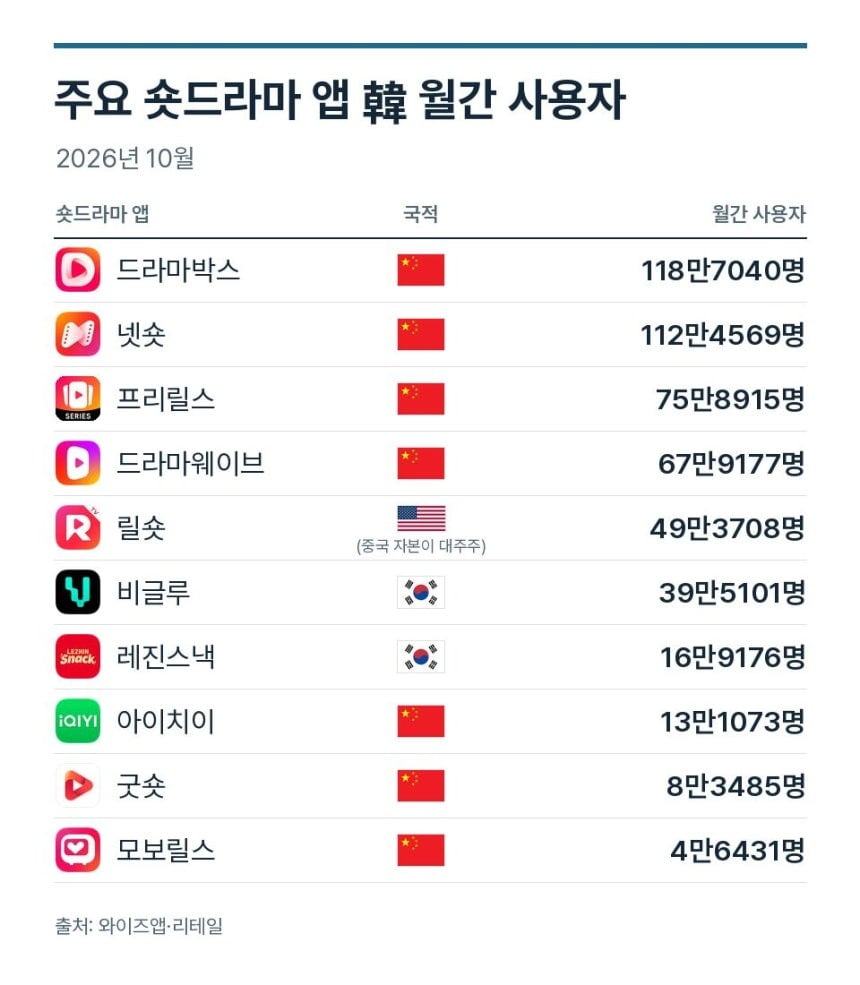

韓 숏드라마 이용자 1년 새 3배 증가
중국 앱 5개, 지난달 216만건 신규 설치
AI로 100회 분량 3일 만에 제작
원본보기
중국 베이징 소재 콘텐츠 기업 디안중 테크놀로지(北京点众科技股份有限公司·Dianzhong Technology)가 싱가포르에서 운영하는 숏폼 드라마 플랫폼 드라마박스에서 제공하는 숏드라마 콘텐츠./ 드라마박스 홈페이지
1분 안에 휘몰아치는 전개로 몰임감을 끌어올리는 숏폼(짧은 영상) 드라마가 인기를 끌면서 국내 숏드라마 앱 사용자도 최근 500만명을 돌파했다. 1년 사이 사용자가 3배 가까이로 늘었는데, 인공지능(AI)으로 제작한 중국 숏드라마가 인기 상위권을 휩쓸면서 영향력을 확대하고 있는 것으로 나타났다.
https://n.news.naver.com/mnews/article/comment/366/0001205500

원본보기지난달 기준 한국인 스마트폰 사용자(안드로이드+iOS)의 주요 숏폼 드라마 앱 월간활성사용자(MAU) 순위 / 그래픽=챗GPT
다 본것들이구만.. x나 유튜브 보면 전편 무료있음 거기서 보면되긴함. 앱에서는 광고당 1회고 질질 겁나끌고 사이다 스토리인데 중국산 사이다라 요상함... 내가 만랩(99)인데 일반인이랑 싸울 때 레벨이 내편 1이 오고 상대편 2가 오고 내편 3이 오고 또 이기면 중재 5가 오고 그러고 살다가 상대편 6이 오고 내편 숨겨진 6이 오고 중재 5가 사실 7이고 .. 끝판왕 99가 오는데 사실 나는 999레벨이고 이딴식임..